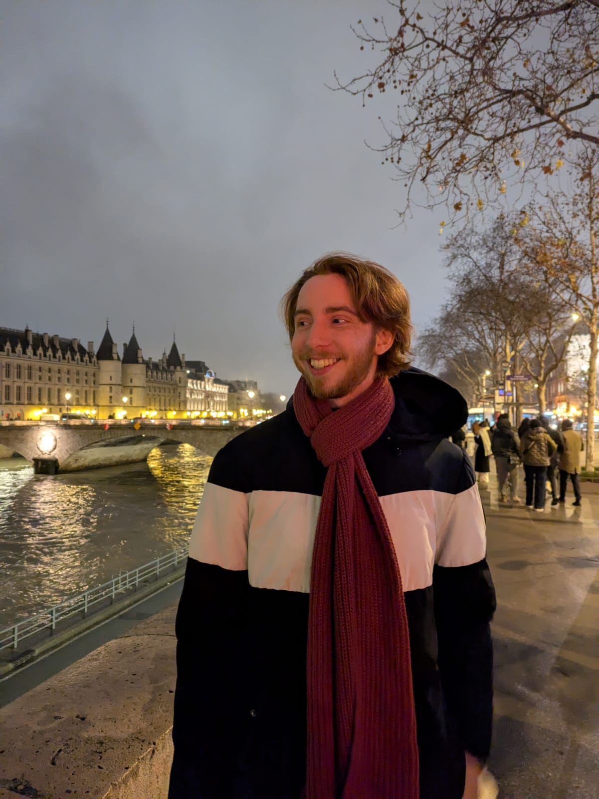

Louis Vassaux
PhD Student in Statistics
Inria Paris · Department of Computer Science, ENS
Paris, France
Research interests: high-dimensional statistics, statistical–computational gaps, graph alignment, random graphs, and statistical physics.

About
I am a second-year PhD student in statistics at Inria Paris and the Department of Computer Science of École normale supérieure, under the supervision of Laurent Massoulié. My research lies at the interface of probability, statistics, and theoretical computer science. I am particularly interested in the information-theoretic and computational limits of inference in random structures, with a current focus on graph alignment and related problems.
Before beginning my PhD, I studied at École normale supérieure and completed the Mathématiques de l’aléatoire master’s programme at Université Paris-Saclay. My broader interests include random matrix theory, disordered systems, and probabilistic aspects of number theory.
Publications and preprints
- Graph alignment in sparse inhomogeneous models via self-overlap Louis Vassaux. Preprint, 2026.
- Phase Transition in Convex Relaxations for Graph Alignment Laurent Massoulié, Sushil Mahavir Varma, Louis Vassaux, and Irène Waldspurger. Conference on Learning Theory (COLT), 2026.
- The feasibility of multi-graph alignment: a Bayesian approach Louis Vassaux and Laurent Massoulié. Advances in Applied Probability, 2026.
- Brownian behaviour of the Riemann zeta function around the critical line Louis Vassaux. Preprint, 2025.